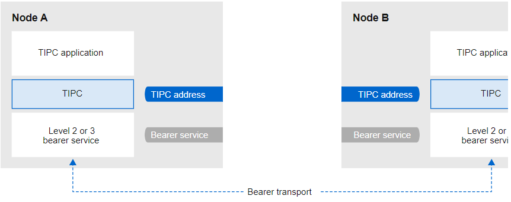

Chapter 55 Network Tracing Using the BPF Compiler Collection
This chapter explains what the BPF Compiler Collection (BCC) is, how to install BCC, and how to use the pre-built scripts provided by the bcc-tools package to perform different network tracing operations. All of these scripts support the --ebpf argument to display the eBPF code uploaded by the tool to the kernel. You can use these codes to learn more about writing eBPF scripts.
55.1. Introduction to BCC
The BPF Compiler Collection (BCC) is a library that facilitates the creation of extended Berkeley Packet Filter (eBPF) programs. The primary tool for eBPF programs is to analyze operating system performance and network performance without additional overhead or security concerns.
BCC no longer requires users to know the technical details of eBPF, and provides many out-of-the-box tools, such as the bcc-tools package with pre-built eBPF programs.
eBPF programs are triggered on events such as disk I/O, TCP connections, and process creation. Programs are less likely to cause the kernel to panic, loop, or become unresponsive because they run in the kernel's secure virtual machine.
55.2. Install the bcc-tools package
This section describes how to install the bcc-tools package, which also installs the BPF Compiler Collection (BCC) library as a dependency.
process
- Install bcc-tools:
# yum install bcc-tools
The BCC tools are installed in the /usr/share/bcc/tools/ directory.
- (Optional) Check tool:
# ll /usr/share/bcc/tools/
...
-rwxr-xr-x. 1 root root 4198 Dec 14 17:53 dcsnoop
-rwxr-xr-x. 1 root root 3931 Dec 14 17:53 dcstat
-rwxr-xr-x. 1 root root 20040 Dec 14 17:53 deadlock_detector
-rw-r--r--. 1 root root 7105 Dec 14 17:53 deadlock_detector.c
drwxr-xr-x. 3 root root 8192 Mar 11 10:28 doc
-rwxr-xr-x. 1 root root 7588 Dec 14 17:53 execsnoop
-rwxr-xr-x. 1 root root 6373 Dec 14 17:53 ext4dist
-rwxr-xr-x. 1 root root 10401 Dec 14 17:53 ext4slower
...
The doc directory in the table above contains documentation for each tool.
55.3. Display TCP connections added to the kernel's accept queue
After the kernel receives an ACK packet in the TCP 3-way handshake, the kernel moves the connection from the SYN queue to the accept queue until the connection's state becomes ESTABLISHED. Therefore, only successful TCP connections will be seen in this queue.
The tcpaccept tool displays all connections added to the accept queue by the kernel using eBPF features. The tool is lightweight because it traces the kernel's accept() function instead of capturing and filtering packets. For example, use tcpaccept for general troubleshooting to show new connections accepted by the server.
process
- Enter the following command to start tracing the kernel accept queue
# /usr/share/bcc/tools/tcpaccept
PID COMM IP RADDR RPORT LADDR LPORT
843 sshd 4 192.0.2.17 50598 192.0.2.1 22
1107 ns-slapd 4 198.51.100.6 38772 192.0.2.1 389
1107 ns-slapd 4 203.0.113.85 38774 192.0.2.1 389
...
Every time the kernel accepts a connection, tcpaccept displays the details of the connection.
- Press Ctrl+C to stop the tracing process.
56.4. Tracking Outgoing TCP Connection Attempts
The tcpconnect tool uses eBPF features to track outgoing TCP connection attempts. The tool's output also includes failed connections.
The tcpconnect tool is lightweight because it only traces the kernel's connect() function, rather than capturing and filtering packets.
process
- Enter the following command to start a trace that displays all outgoing connections:
# /usr/share/bcc/tools/tcpconnect
PID COMM IP SADDR DADDR DPORT
31346 curl 4 192.0.2.1 198.51.100.16 80
31348 telnet 4 192.0.2.1 203.0.113.231 23
31361 isc-worker00 4 192.0.2.1 192.0.2.254 53
...
Every time the kernel handles an outgoing connection, tcpconnect displays the details of the connection.
- Press Ctrl+C to stop the tracing process.
55.5. Measuring the Latency of Outbound TCP Connections
TCP connection latency is the time it takes to establish a connection. This usually involves kernel TCP/IP processing and network round-trip time, not application runtime.
The tcpconnlat tool uses eBPF features to measure the time between sending a SYN packet and receiving a response packet.
process
- Start measuring the latency of outbound connections:
# /usr/share/bcc/tools/tcpconnlat
PID COMM IP SADDR DADDR DPORT LAT(ms)
32151 isc-worker00 4 192.0.2.1 192.0.2.254 53 0.60
32155 ssh 4 192.0.2.1 203.0.113.190 22 26.34
32319 curl 4 192.0.2.1 198.51.100.59 443 188.96
...
Every time the kernel handles an outgoing connection, tcpconnlat displays the details of the connection after the kernel receives a response packet.
- Press Ctrl+C to stop the tracing process.
55.6. Display details of TCP packets and fragments dropped by the kernel
The tcpdrop tool enables administrators to display details of TCP packets and segments dropped by the kernel. Use this utility to debug high rates of dropped packets for remote systems to send timer-based retransmissions. High rates of freeing packets and fragments can affect server performance.
The tcpdrop tool uses eBPF features, rather than capturing and filtering resource-intensive packets, to retrieve information directly from the kernel.
process
- Enter the following command to display dropped TCP packets and fragments details:
# /usr/share/bcc/tools/tcpdrop
TIME PID IP SADDR:SPORT > DADDR:DPORT STATE (FLAGS)
13:28:39 32253 4 192.0.2.85:51616 > 192.0.2.1:22 CLOSE_WAIT (FIN|ACK)
b'tcp_drop+0x1'
b'tcp_data_queue+0x2b9'
...
13:28:39 1 4 192.0.2.85:51616 > 192.0.2.1:22 CLOSE (ACK)
b'tcp_drop+0x1'
b'tcp_rcv_state_process+0xe2'
...
Every time the kernel drops a TCP packet and segment, tcpdrop displays details of the connection, including the kernel stack trace that caused the packet to be dropped.
- Press Ctrl+C to stop the tracing process.
55.7. Tracing TCP sessions
The tcplife tool keeps track of open and closed TCP sessions using eBPF and prints a line of output summarizing each session. Administrators can use tcplife to identify connections and the amount of traffic transmitted.
The examples in this section describe how to display connections to port 22 (SSH) to retrieve the following information:
- Local Process ID (PID)
- local process name
- Local IP address and port number
- Remote IP address and port number
- The amount of traffic received and transmitted in KB.
- Amount of time the connection was active (milliseconds)
process
- Enter the following command to start tracing connections to local port 22:、
/usr/share/bcc/tools/tcplife -L 22
PID COMM LADDR LPORT RADDR RPORT TX_KB RX_KB MS
19392 sshd 192.0.2.1 22 192.0.2.17 43892 53 52 6681.95
19431 sshd 192.0.2.1 22 192.0.2.245 43902 81 249381 7585.09
19487 sshd 192.0.2.1 22 192.0.2.121 43970 6998 7 16740.35
...
Every time a connection is closed, tcplife will display the details of the connection.
- Press Ctrl+C to stop the tracing process.
55.8. Tracking TCP retransmissions
The tcpretrans tool displays detailed information about TCP retransmissions, such as local and remote IP addresses and port numbers, and the state of TCP at the time of the retransmission.
The tool uses eBPF functionality, so the overhead is very low.
process
- Use the following command to display TCP retransmission details:
# /usr/share/bcc/tools/tcpretrans
TIME PID IP LADDR:LPORT T> RADDR:RPORT STATE
00:23:02 0 4 192.0.2.1:22 R> 198.51.100.0:26788 ESTABLISHED
00:23:02 0 4 192.0.2.1:22 R> 198.51.100.0:26788 ESTABLISHED
00:45:43 0 4 192.0.2.1:22 R> 198.51.100.0:17634 ESTABLISHED
...
cpretrans displays connection details each time the kernel calls a TCP retransmit function.
- Press Ctrl+C to stop the tracing process.
55.9. Display TCP state change information
During a TCP session, the TCP state changes. The tcpstates tool tracks these state changes using eBPF functionality and prints detailed information including the duration of each state. For example, use tcpstates to determine if a connection is spending too much time in the initialization state.
process
- Start tracking TCP state changes with the following command:
# /usr/share/bcc/tools/tcpstates
SKADDR C-PID C-COMM LADDR LPORT RADDR RPORT OLDSTATE -> NEWSTATE MS
ffff9cd377b3af80 0 swapper/1 0.0.0.0 22 0.0.0.0 0 LISTEN -> SYN_RECV 0.000
ffff9cd377b3af80 0 swapper/1 192.0.2.1 22 192.0.2.45 53152 SYN_RECV -> ESTABLISHED 0.067
ffff9cd377b3af80 818 sssd_nss 192.0.2.1 22 192.0.2.45 53152 ESTABLISHED -> CLOSE_WAIT 65636.773
ffff9cd377b3af80 1432 sshd 192.0.2.1 22 192.0.2.45 53152 CLOSE_WAIT -> LAST_ACK 24.409
ffff9cd377b3af80 1267 pulseaudio 192.0.2.1 22 192.0.2.45 53152 LAST_ACK -> CLOSE 0.376
...
Each time a connection changes its state, tcpstates displays a new row with updated connection details.
If multiple connections have changed their state at the same time, use the socket address (SKADDR) in the first column to determine which entries belong to the same connection.
- Press Ctrl+C to stop the tracing process.
55.10. Aggregate TCP traffic sent to a specific subnet
The tcpsubnet tool summarizes and aggregates IPv4 TCP traffic from a local host to a subnet and displays the output at regular intervals. The tool uses eBPF functionality to collect and summarize data to reduce overhead.
By default, tcpsubnet aggregates traffic for the following subnets:
- 127.0.0.1/32
- 10.0.0.0/8
- 172.16.0.0/12
- 192.0.2.0/24/16
- 0.0.0.0/0
Note that the last subnet (0.0.0.0/0) is an all-inclusive option. The tcpsubnet tool counts all traffic on subnets other than the first four in this all-inclusive entry.
Follow the procedure below to calculate the traffic of the 192.0.2.0/24 and 198.51.100.0/24 subnets. Traffic to other subnets will be tracked in the 0.0.0.0/0 all-inclusive subnet entry.
process
- Start monitoring traffic sent to 192.0.2.0/24, 198.51.100.0/24, and other subnets:
# /usr/share/bcc/tools/tcpsubnet 192.0.2.0/24,198.51.100.0/24,0.0.0.0/0
Tracing... Output every 1 secs. Hit Ctrl-C to end
[02/21/20 10:04:50]
192.0.2.0/24 856
198.51.100.0/24 7467
[02/21/20 10:04:51]
192.0.2.0/24 1200
198.51.100.0/24 8763
0.0.0.0/0 673
...
This command displays the traffic per second for the specified subnet in bytes.
- Press Ctrl+C to stop the tracing process.
55.11. Display network throughput by IP address and port
The tcptop tool displays the TCP traffic sent and received by the host in KB. This report is automatically refreshed and contains only active TCP connections. The tool uses eBPF functionality, so the overhead is very low.
process
- To monitor sent and received traffic, enter:
# /usr/share/bcc/tools/tcptop
13:46:29 loadavg: 0.10 0.03 0.01 1/215 3875
PID COMM LADDR RADDR RX_KB TX_KB
3853 3853 192.0.2.1:22 192.0.2.165:41838 32 102626
1285 sshd 192.0.2.1:22 192.0.2.45:39240 0 0
...
command The output includes only active TCP connections. If the local or remote system closes the connection, the connection is no longer visible in the output.
- Press Ctrl+C to stop the tracing process.
55.12. Tracking established TCP connections
The tcptracer tool traces connections, kernel functions that accept and close TCP connections. The tool uses eBPF functionality, so the overhead is very low.
process
- Start the tracing process with the following command:
# /usr/share/bcc/tools/tcptracer
Tracing TCP established connections. Ctrl-C to end.
T PID COMM IP SADDR DADDR SPORT DPORT
A 1088 ns-slapd 4 192.0.2.153 192.0.2.1 0 65535
A 845 sshd 4 192.0.2.1 192.0.2.67 22 42302
X 4502 sshd 4 192.0.2.1 192.0.2.67 22 42302
...
Whenever the kernel connects, accepts, or closes a connection, tcptracer displays connection details.
- Press Ctrl+C to stop the tracing process.
55.13. Tracking IPv4 and IPv6 listen requests
The solisten tool tracks all IPv4 and IPv6 listen requests. It keeps track of listening requests, including listeners that eventually fail or do not accept connections. When a program wants to listen for a TCP connection, the program traces the function called by the kernel.
process
- Enter the following command to start a trace that displays all listening TCP attempts:
# /usr/share/bcc/tools/solisten
PID COMM PROTO BACKLOG PORT ADDR
3643 nc TCPv4 1 4242 0.0.0.0
3659 nc TCPv6 1 4242 2001:db8:1::1
4221 redis-server TCPv6 128 6379 ::
4221 redis-server TCPv4 128 6379 0.0.0.0
....
- Press Ctrl+C to stop the tracing process.
55.14. Overview of Service Time of Softirqs
The softirqs tool summarizes the time spent servicing soft interrupts (soft IRQs) and displays this time as a total or a histogram distribution. This tool uses the irq:softirq_enter and irq:softirq_exit kernel tracepoints and is a stable tracing mechanism.
process
- Enter the following command to start tracking soft irq event times:
# /usr/share/bcc/tools/softirqs
Tracing soft irq event time... Hit Ctrl-C to end.
^C
SOFTIRQ TOTAL_usecs
tasklet 166
block 9152
net_rx 12829
rcu 53140
sched 182360
timer 306256
- Press Ctrl+C to stop the tracing process.
Chapter 56 Getting Started with TIPC
Transparent Interprocess Communication (TIPC) (also known as cluster domain sockets) is an interprocess communication (IPC) service for cluster-wide operations.
Applications running in high availability and dynamic cluster environments have special needs. The number of nodes in the cluster may vary, routers may fail, and functions may be moved to different nodes in the cluster for load balancing purposes. TIPC minimizes the work of application developers to deal with such issues and handles them in the correct and best way possible. In addition, TIPC provides more efficient and fault-tolerant communication than common protocols such as TCP.
56.1. TIPC Architecture
TIPC is a layer between applications using TIPC and the packet transport service (bearer), spanning the transport layer, network layer, and signaling link layer. However, TIPC can use a different transport protocol as a bearer, so that a TCP connection can act as a bearer for a TIPC signal connection.
TIPC supports the following bearers:
- Ethernet
- InfiniBand
- UDP protocol
TIPC provides reliable transfer of information between TIPC ports, which are the endpoints for all TIPC communications.
The following is the TIPC architecture diagram:

56.2. Load the tipc module when the system boots
Before using the TIPC protocol, please load the tipc kernel module. This section describes how to configure OpenCloudOS to automatically load this module when the system boots.
process
- Create the /etc/modules-load.d/tipc.conf file with the following content:
tipc
- Restart the systemd-modules-load service to load modules without rebooting the system:
# systemctl start systemd-modules-load
verify
- Verify that RHEL has loaded the tipc module with the following command:
# lsmod | grep tipc
tipc 311296 0
If the command does not show an entry for the tipc module, it is not loaded by OpenCloudOS.
56.3. Create TIPC network
Note that the following commands only temporarily configure the TIPC network. To permanently configure TIPC on a node, use the commands of this process in a script and configure OpenCloudOS to execute the script when the system boots.
prerequisite
- The tipc module is loaded.
process
- Optional: Set a unique node identity, such as UUID or hostname of the node:
# tipc node set identity host_name
Identity can be any unique string of up to 16 letters and numbers.
You cannot set or change identities after this step.
- Add a bearer. For example, to use Ethernet as the medium and the enp0s1 device as the physical bearer device, enter:
# tipc bearer enable media eth device enp1s0
- Optional: For redundancy and better performance, attach more bearers using the command from the previous step. You can configure up to three bearers, but no more than two on the same medium.
- Repeat all previous steps in each node that should join the TIPC network.
verify
- Display the link status of cluster members:
# tipc link list
broadcast-link: up
5254006b74be:enp1s0-525400df55d1:enp1s0: up
This output indicates that the link between bearer enp1s0 on node 5254006b74be and bearer enp1s0 on node 525400df55d1 is up.
- Display the TIPC release table:
# tipc nametable show
Type Lower Upper Scope Port Node
0 1795222054 1795222054 cluster 0 5254006b74be
0 3741353223 3741353223 cluster 0 525400df55d1
1 1 1 node 2399405586 5254006b74be
2 3741353223 3741353223 node 0 5254006b74be
Two entries with a service type of 0 indicate that two nodes are members of this cluster.
An entry with a service type of 1 represents the built-in topology service tracking service.
Entries with a service type of 2 show links as seen from the publishing node. The range limit 3741353223 represents the address of the peer endpoint in decimal format (based on a unique 32-bit hash of the node's identity).
Chapter 57 Automating Network Interface Configuration in Public Clouds Using nm-cloud-setup
Typically, a virtual machine (VM) has only one DHCP-configurable interface. However, some virtual machines may have multiple network interfaces, IP addresses, and IP subnets within a single interface that cannot be configured by DHCP. Additionally, administrators can reconfigure the network while the machine is running. The nm-cloud-setup tool automatically retrieves configuration information from a cloud service provider's metadata server and updates the network configuration of a virtual machine in a public cloud.
57.1. Configuring and pre-deploying nm-cloud-setup
To enable and configure network interfaces in the public cloud, run nm-cloud-setup as a timer and service. The following procedure describes how to use nm-cloud-setup with Amazon EC2.
prerequisite
- There is a network connection.
- The connection uses DHCP. By default, NetworkManager creates a connection profile that uses DHCP. If no configuration file was created because you set the no-auto-default parameter in /etc/NetworkManager/NetworkManager.conf, create this initial connection manually.
process
- Install the nm-cloud-setup package:
# yum install NetworkManager-cloud-setup
-
Create and run the snap-in file for the nm-cloud-setup service:
-
Start editing the snap-in file with the following command:
# systemctl edit nm-cloud-setup.serviceIt is very important to explicitly start the service or reboot the system for the configuration settings to take effect.
-
Use systemd snap-in files to configure cloud providers in nm-cloud-setup. For example, to use Amazon EC2, enter:
[Service] Environment=NM_CLOUD_SETUP_EC2=yesYou can set the following environment variables to enable the cloud provider you are using:
- NM_CLOUD_SETUP_AZURE for Microsoft Azure
- NM_CLOUD_SETUP_EC2 for Amazon EC2 (AWS)
- NM_CLOUD_SETUP_GCP for Google Cloud Platform (GCP)
- for Alibaba Cloud ( Aliyun's) NM_CLOUD_SETUP_ALIYUN
-
Save the file and exit the editor.
-
Reload the systemd configuration:
# systemctl daemon-reload
- Enable and start the nm-cloud-setup service:
# systemctl enable --now nm-cloud-setup.service
- Enable and start the nm-cloud-setup timer:
# systemctl enable --now nm-cloud-setup.timer